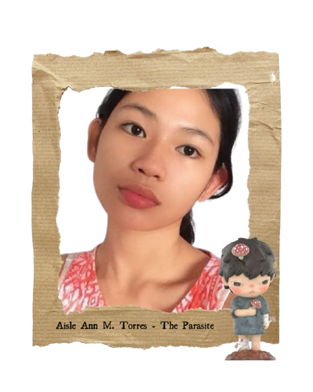

Aisle Ann M. Torres
Hola! I'm Aysle Ann — a radiant soul wrapped in quiet wonder. I am the gentle light that glimmers in shadows, the soft joy that dances even in the depths of sorrow. Where the world grows heavy and the skies turn dim, I arrive with a heart full of warmth — to remind everyone of the stars that still shine within.
Why I Chose 'The Parasite' Hirono Figurine

Seeing this figure, Hirono, with the name of a parasite—yet something about it reminded me that even in the midst of all the chaos, there's a quiet, persistent glow, like hope, like wonder, that never quite fades.
Hobbies
- In love with art, and wondering at everthing.
Fun Facts
- I still believe in make wishes on stars — and to think some of them are listening.